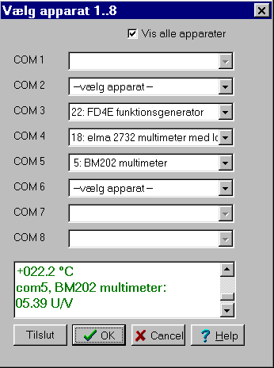
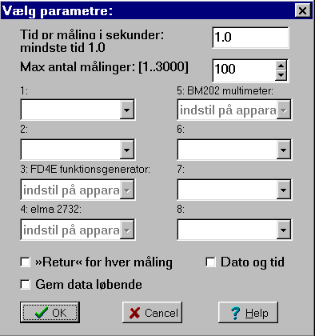

Man kan enten anskaffe sig et kort med flere com-porte, eller man kan frigøre com-porte ved at købe en pc med usb-porte. Usb-enheder benytter tilsammen kun ét irq.Den aktuelle pc har 2 standard com-porte, der benytter irq 3 og 4 og et pci-kort med 4 serielle com-porte, der deles om ét irq. Kortet er købt i Zitech. Musen er tilsluttet com-1, derfor kan com-1 ikke vælges.
Datalyse tester som sædvanlig forbindelsen til apparaterne. Grøn tekst symboler, at forbindelsen er i orden. Er der ikke forbindelse til apparaterne, fås en fejlmeddelelse og teksten bliver rød. I dette tilfælde viser den grønne tekst, at forbindelsen til de 3 apparater er ok.
Hvis forbindelsen er OK, indsættes apparaternes menu i hovedmenuen i Datalyse.
Når du herefter vælger multitabel, fås nedenstående menu til valg af parametre:

Se den tilsvarende beskrivelse, når der er valgt to apparater.